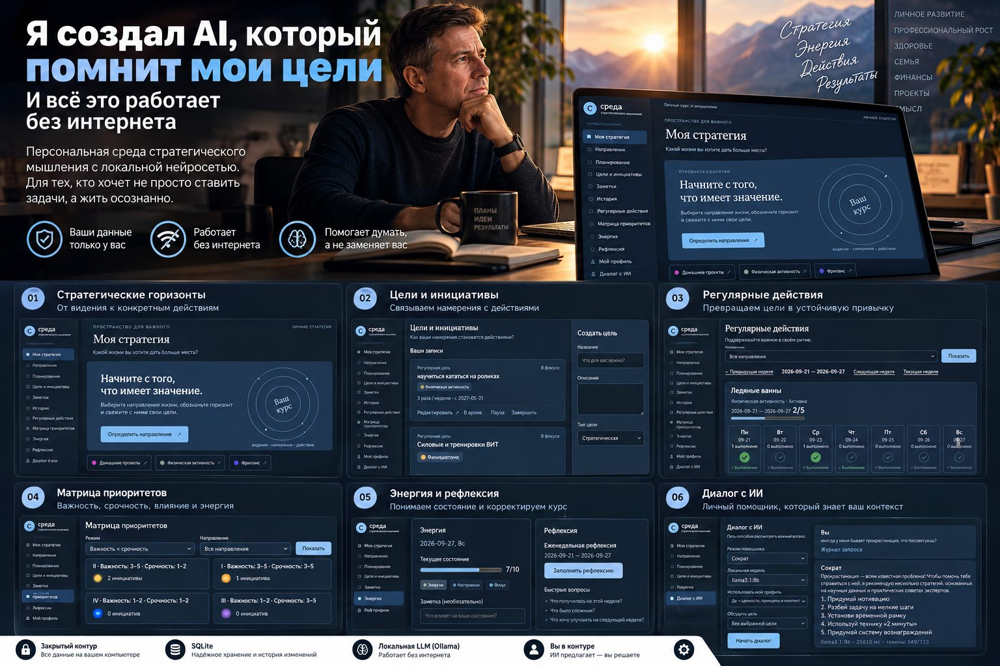
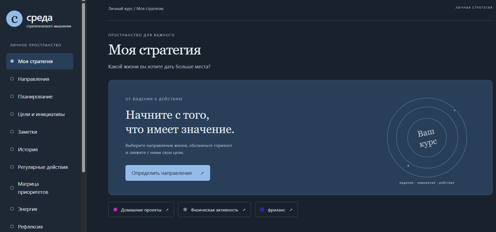
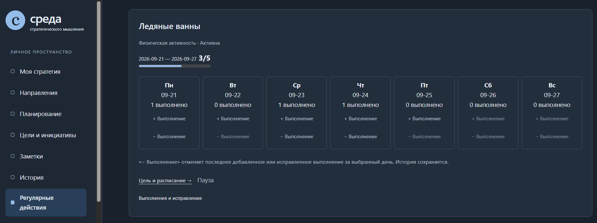
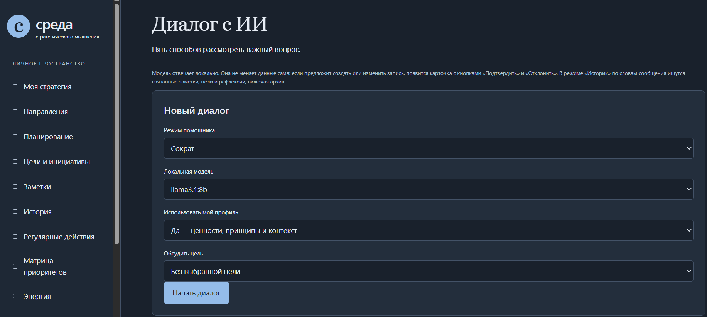

Я создал AI, который помнит мои цели. И всё это работает без интернета
Как я построил локальную среду стратегического мышления с AI-помощником: цели, трекеры, рефлексия и Llama 3.1 на собственном компьютере — без облака и внешних API.

Ещё недавно это звучало почти как фантастика. Сегодня я создаю персональную среду стратегического мышления с локальной нейросетью, собственным планировщиком и полным контролем над данными.
Представьте обычное утро.
Вы открываете приложение, а оно встречает вас не очередным списком из двадцати задач.
Вместо этого персональный AI-помощник говорит:
«Андрей, доброе утро!
На этой неделе ты планировал пять ледяных ванн, три тренировки и два занятия по AI-архитектуре.
Три ледяные ванны уже выполнены. Хорошее начало!
А вот работу над AI-проектом ты переносил дважды. В последней рефлексии ты отметил, что к вечеру у тебя остаётся мало энергии для сложных задач.
Может быть, сегодня стоит выделить час утром на проект?
Кстати, как продвигается твоя работа? Что сейчас мешает двигаться быстрее?»
И это не стандартная мотивирующая фраза, которую нейросеть выдаёт всем подряд.
Это рекомендация, основанная на ваших целях, истории выполнения, личных заметках и предыдущих размышлениях.
Система помнит, куда вы хотите прийти.
Видит, что вы для этого делаете.
Помогает замечать отклонения.
И возвращает внимание к тому, что действительно важно.
А теперь самое интересное: всё это может работать на вашем собственном компьютере. Без облачной нейросети, внешних AI API и передачи личных записей третьим сторонам.
Ещё несколько лет назад для меня это выглядело бы как фантастика.
Сегодня я создаю именно такой инструмент.
Я назвал его «Среда стратегического мышления».
И хочу рассказать, почему вообще решил его разработать, что уже получилось и как здесь связан мой многолетний опыт операционного управления с AI-архитектурой.
Почему мне понадобился собственный планировщик
За 25 лет операционного управления я привык работать с целями, показателями, планами, ресурсами и результатами.
В бизнесе мы постоянно задаём вопросы:
- Куда движемся?
- Какой результат хотим получить?
- Какие действия для этого необходимы?
- Что мешает?
- Какие ресурсы потребуются?
- Что нужно изменить, если план не выполняется?
Но однажды я задумался: почему мы так тщательно проектируем системы управления бизнесом и гораздо реже создаём столь же последовательные системы управления собственным развитием?
Обычный таск-менеджер помогает не забыть о задаче.
Календарь помогает выделить время.
Трекер привычек показывает регулярность.
Заметки сохраняют идеи.
Но всё это часто существует отдельно друг от друга.
А мне хотелось видеть всю картину.
Не просто «что сделать сегодня», а как сегодняшние действия связаны с моими целями на год, стратегией и более долгосрочным видением.
Так появилась идея объединить всё в одной системе.
И добавить к ней персонального AI-помощника.
От видения на годы — к конкретному действию сегодня
Первое, что я хотел получить, — полноценную систему стратегического планирования.
Не список задач.
А пространство, в котором можно последовательно пройти путь:
Видение → Стратегия → Цель → Регулярное действие → Результат → Рефлексия.
В приложении появились несколько горизонтов планирования: долгосрочное видение, стратегия, год, квартал, месяц и неделя.
Есть и отдельный горизонт «Когда-нибудь» — для идей, которые пока не требуют немедленного исполнения.

Например, я ставлю цель развивать компетенции в AI-архитектуре.
Это не просто одна запись в списке.
У цели появляются конкретные инициативы, ожидаемые результаты и регулярные действия.
Допустим, я решаю заниматься изучением AI три раза в неделю.
Система включает это действие в недельный трекер согласно расписанию.
Я отмечаю выполнение, вижу прогресс, могу изменить периодичность и при этом сохранить историю предыдущих планов.
То же самое касается спорта, работы над собственными проектами и других направлений жизни.
Стратегия перестаёт быть документом, который написал в январе и забыл к марту.
Она постепенно превращается в систему ежедневных действий.
Мой любимый пример — ледяные ванны
В моём приложении есть реальная регулярная цель: ледяные ванны пять раз в неделю.
В недельном трекере видно:
- План — 5.
- Выполнено — 3.
- Прогресс — 3/5.
Каждый день представлен отдельной карточкой, где можно отметить выполнение.

Казалось бы, обычный трекер привычек.
Но для меня здесь важна связь с более длинной историей.
Это действие относится к направлению «Физическая активность».
У него есть собственная периодичность.
История выполнения.
Возможность изменить расписание.
И в дальнейшем — возможность обсудить результат с AI.
Например:
«Андрей, на этой неделе ты выполнил две из пяти запланированных ледяных ванн. Хочешь сохранить первоначальную цель или пересмотреть расписание?»
Или:
«В последние несколько недель ты стабильно выполняешь три тренировки, но с ледяными ваннами регулярность ниже. Давай посмотрим, что мешает».
Вот здесь обычный трекер начинает превращаться в инструмент рефлексии.
Управлять нужно не только временем, но и энергией
Есть ещё одна идея, которую я хотел обязательно заложить в продукт.
Мы привыкли планировать время.
Но далеко не всегда учитываем, что час утром и час поздно вечером — это совершенно разные ресурсы.
Можно поставить сложную интеллектуальную задачу на 21:00, а потом несколько дней подряд переносить её и обвинять себя в недостаточной дисциплине.
Хотя проблема может быть не в дисциплине.
Возможно, для этой задачи просто выбран неподходящий период.
Поэтому в приложении появились оценка энергии, временные контейнеры и несколько моделей приоритизации.
В том числе классическая матрица Эйзенхауэра:
Важность × Срочность.
А также:
- Влияние × Усилие.
- Важность × Энергия.
Для меня это принципиальный момент.
В операционном управлении мы постоянно оцениваем ресурсы компании.
Но собственную энергию нередко воспринимаем как нечто бесконечное.
А она такой не является.
И я хочу, чтобы моя система планирования это учитывала.
А теперь представьте, что вся эта информация становится контекстом для AI
Вот здесь проект перестаёт быть обычным приложением для планирования.
Потому что локальная языковая модель может работать не с одним изолированным запросом, а с контекстом, который накапливается в системе.
Мои стратегические цели.
Планы на год и квартал.
Регулярные действия.
История выполнения.
Личные заметки.
Рефлексии.
Оценки энергии.
Ценности и принципы.
Всё это не просто отдельные записи.
Это информация, которая помогает понять, почему я ставлю определённые цели, как двигаюсь к ним и что меняется со временем.
И когда эти данные становятся доступным контекстом для AI, появляются совершенно другие возможности.
Например, я могу спросить:
«Почему я постоянно откладываю работу над своим проектом?»
И получить не только стандартные советы о борьбе с прокрастинацией, а разбор с учётом моих собственных записей.
В идеале помощник сможет заметить:
«В последней рефлексии ты писал, что слишком много времени уходит на параллельные инициативы. Возможно, дело не в прокрастинации, а в конфликте приоритетов?»
Или:
«Ты уже несколько недель планируешь заниматься AI-архитектурой по вечерам, но регулярно отмечаешь низкий уровень энергии в это время. Может быть, стоит изменить расписание?»
Вот ради такого взаимодействия я и начал создавать эту среду.
Не ради красивого AI-чата.
А ради помощника, который способен поддерживать непрерывность стратегического мышления.
AI, который не ждёт, пока ты вспомнишь о своих целях
Обычно взаимодействие с нейросетью выглядит так:
Вы открываете чат.
Формулируете запрос.
Объясняете контекст.
Получаете ответ.
В следующий раз многое приходится объяснять заново.
Я хочу другого пользовательского опыта.
Открываешь приложение — и помощник сам помогает вернуться к текущему контексту.
Он может предложить обсудить вчерашний результат, обратить внимание на невыполненное регулярное действие, напомнить о стратегической цели или задать вопрос для рефлексии.
Например:
«Ты завершил важный этап проекта, над которым работал несколько недель. Давай зафиксируем результат и определим следующий шаг».
Или:
«В прошлой месячной рефлексии ты решил сократить количество параллельных проектов. Сейчас у тебя появилось ещё три новых инициативы. Какие из них действительно соответствуют твоей стратегии?»
Или просто:
«Ты поставил цель заниматься спортом три раза в неделю. Пока выполнена одна тренировка. В какие дни тебе будет удобнее провести оставшиеся две?»
Это не попытка создать цифрового начальника.
И не система, которая должна постоянно оценивать человека.
Наоборот.
Это способ поддерживать осознанность в условиях, когда ежедневная рутина постоянно конкурирует со стратегическими целями.
Именно инициативное сопровождение при открытии приложения я рассматриваю как один из следующих важных этапов развития продукта.
Что уже работает: локальный AI-диалог
Сейчас в приложении реализован отдельный раздел «Диалог с ИИ».
И это уже не концепция на бумаге.
На моём компьютере работает локальная языковая модель llama3.1:8b через Ollama.
В интерфейсе предусмотрены пять режимов помощника, выбор модели, использование личного профиля и возможность обсуждать конкретную цель.
Можно включить личный профиль — ценности, принципы и контекст.
Можно выбрать цель, которую хочешь обсудить.
Можно работать с историей связанных записей.
При этом интерфейс показывает, какой контекст передавался модели, а журнал запроса помогает разбирать работу AI.

Я уже тестирую различные режимы диалога.
Например, в режиме «Сократ» помощник помогает рассматривать проблему через вопросы.
В режиме «Критик» — предлагает взглянуть на ситуацию с другой стороны.
На одном из тестов я спросил:
«Иногда у меня бывает прокрастинация. Что посоветуешь?»
Локальная модель предложила несколько способов: разбить большую задачу на небольшие шаги, установить временные рамки, вспомнить мотивацию и использовать короткие действия для начала работы.
Пока это преимущественно общие рекомендации.
И именно здесь находится следующий важный этап разработки — сделать ответы более персональными за счёт корректного использования накопленного контекста.
Но уже сейчас меня радует сам факт:
AI работает локально. На моём компьютере. Без обращения к облачной нейросети.
Почему закрытый контур был для меня принципиальным решением
Когда я начал проектировать приложение, у меня было ещё одно требование.
Я не хотел передавать личные планы, размышления и стратегические решения внешним AI-сервисам.
Такая информация может быть достаточно чувствительной.
Причём речь не обязательно о коммерческой тайне.
Иногда личные цели, сомнения, оценки собственного состояния и записи о важных решениях — это именно та информация, которую человек хочет оставить только у себя.
Поэтому я выбрал локальную архитектуру.
- Приложение работает на Python и FastAPI.
- Основные данные хранятся в SQLite.
- Локальная языковая модель запускается через Ollama.
- Сервер доступен только через
127.0.0.1. - Для основного рабочего сценария не нужны внешние AI API.
После установки необходимых компонентов и загрузки модели приложение может работать без интернета.
Для меня это не просто техническая особенность.
Это возможность использовать AI в пространстве, где я контролирую хранение информации.
Конечно, локальное размещение само по себе не гарантирует абсолютную безопасность. Компьютер необходимо защищать, а данные — резервировать.
Но зависимость от внешней инфраструктуры становится значительно меньше.
И мне нравится сама идея:
Персональный AI может быть действительно персональным не только по содержанию ответов, но и по архитектуре.
Самое важное: AI не управляет моей жизнью
В процессе разработки я принял решение, которое считаю одним из главных для всего проекта.
AI не должен самостоятельно менять мои цели, планы и записи.
Он может анализировать доступный контекст.
Предлагать действия.
Помогать структурировать мысли.
Формулировать рекомендации.
Но если предложение предполагает изменение данных, решение остаётся за мной.
Для этого предусмотрен отдельный механизм подтверждения.
Например, модель предлагает:
«Разбить инициативу на три регулярных действия».
Под сообщением появляется карточка с описанием предлагаемого изменения.
Я могу подтвердить или отклонить его.
При подтверждении приложение повторно проверяет данные и только затем применяет изменение.
При отклонении основные данные остаются прежними.
В AI-архитектуре этот принцип называется Human-in-the-loop.
Для меня его смысл очень простой:
AI может помогать мне думать, но не должен принимать за меня жизненные решения.
И чем больше я работаю с AI, тем сильнее убеждаюсь, что не всякую доступную автоматизацию нужно реализовывать.
Иногда ценность технологии заключается не в том, чтобы исключить человека из процесса.
А в том, чтобы дать ему больше возможностей для осознанного выбора.
За красивым интерфейсом оказалась серьёзная инженерная работа
Когда я только задумывал этот проект, мне казалось, что самая сложная часть — связать стратегическое планирование с локальной нейросетью.
На практике значительная часть работы оказалась связана с архитектурой данных и надёжностью операций.
Сегодня в приложении реализована предметная модель с 22 таблицами, миграциями базы данных, журналом событий и очередью event_outbox.
Изменения записываются в историю.
Повторные запросы с одинаковым идентификатором не должны создавать дубли.
При конфликте версий приложение не перезаписывает молча более свежие данные.
Для AI-предложений предусмотрены повторная валидация и транзакционное применение изменений.
Есть автоматизированные тесты и E2E-проверки в Chrome.
Зачем всё это персональному планировщику?
Потому что я хочу пользоваться им регулярно.
И не хочу однажды обнаружить, что история выполнения изменилась, цель продублировалась или AI записал действие, которое я не подтверждал.
Даже персональный AI-продукт должен быть спроектирован как система, которой можно доверять.
Это ещё один вывод, к которому я пришёл за время работы над AI-проектами.
Что дальше
Сейчас у приложения уже есть основа, на которой можно развивать персонального стратегического помощника.
Следующие направления — смысловой поиск RAG по записям и рефлексиям, расширение AI-инструментов, автоматизированное резервное копирование и восстановление, проверки доступности и производительности.
Но самое интересное для меня — дальнейший переход от обычного AI-диалога к более инициативному помощнику.
Который способен при открытии приложения формировать персональную повестку на основе актуального контекста.
Не просто отвечать на вопросы.
А помогать поддерживать движение к выбранным целям.
При этом я не хочу превращать систему в ещё один источник уведомлений и давления.
Хороший помощник должен уметь не только напоминать о делах, но и помогать понять, когда необходимо пересмотреть план, снизить нагрузку или признать, что приоритеты изменились.
И вот что я понял как управленец
Этот проект оказался для меня гораздо большим, чем эксперимент с локальной языковой моделью.
Он позволил объединить две профессиональные области, которыми я занимаюсь.
С одной стороны — многолетний опыт операционного управления: цели, процессы, показатели, ресурсы, контроль и развитие людей.
С другой — AI-архитектура: модели, данные, автоматизация, ограничения, наблюдаемость и управление действиями AI.
И в какой-то момент я понял, что применяю к собственной жизни тот же принцип, который использовал в управлении бизнесом.
Не просто ставить задачи. Строить систему, которая помогает достигать целей.
Только теперь у этой системы появляется персональный AI-помощник.
Он не знает будущего.
Не обладает собственной мудростью.
Не способен гарантировать правильность решений.
Но он может помогать видеть связи, которые теряются в ежедневной рутине.
Возвращать внимание к долгосрочным целям.
Напоминать о собственных решениях.
Помогать анализировать результаты.
И предлагать следующий шаг.
Для меня это и есть наиболее интересное направление развития персонального AI.
Вместо вывода
Я создавал «Среду стратегического мышления» для себя.
Не как очередной SaaS.
Не как универсальный таск-менеджер.
И не ради того, чтобы продемонстрировать, что локальная нейросеть умеет поддерживать диалог.
Мне хотелось создать пространство, в котором можно думать о будущем, видеть связь между стратегией и ежедневными действиями, учитывать собственную энергию и получать персональную поддержку AI.
При этом сохранять контроль над данными и решениями.
И знаете, что мне нравится в этом проекте больше всего?
Ещё недавно сама идея выглядела почти фантастикой:
Персональный AI, который работает на твоём компьютере, помнит контекст твоих целей и помогает тебе двигаться к ним.
Сегодня это уже не вопрос принципиальной возможности.
Это вопрос архитектуры, качества данных и того, насколько хорошо мы понимаем, какую роль хотим отдать искусственному интеллекту.
А мой главный принцип остался прежним:
Не AI должен управлять человеком. AI должен помогать человеку лучше управлять собственной жизнью.
Именно такую систему я и создаю.
А вы доверили бы локальному AI свои стратегические цели, планы и личные рефлексии, если бы все данные оставались только на вашем компьютере?
Автор: Андрей Семенов Направление: Operational Excellence × Strategic Planning × AI Architecture Проект: «Среда стратегического мышления» Технологии: Python · FastAPI · SQLite · Ollama · Llama 3.1 8B